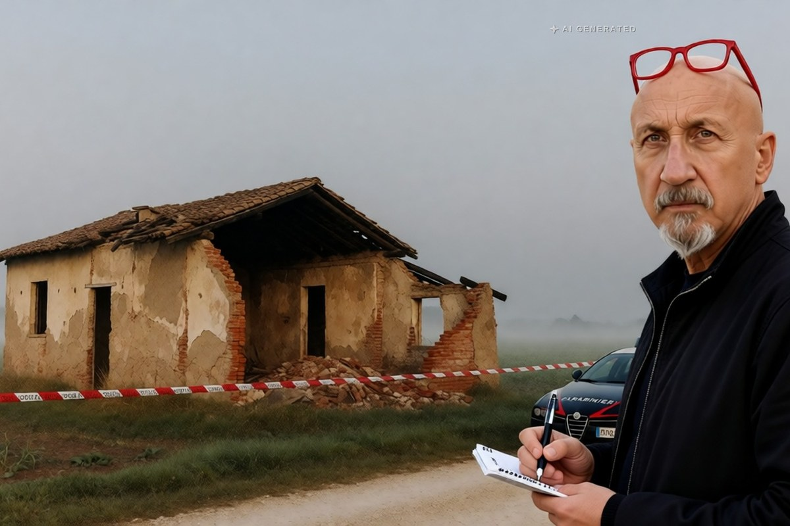

Cronaca · 1 novembre 2026
Strage di Castel d'Azzano: indagati i tre ufficiali che guidavano l'operazione

I comandanti dell'Arma chiamati a testimoniare al processo ai fratelli Ramponi sono ora indagati per omicidio colposo plurimo. Per gli stessi tre è aperto anche un procedimento disciplinare, rinviato al 15 gennaio.
di Franco Zanghì
Il 18 novembre, nell'aula della Corte d'Assise di Verona, riprende il processo per strage a Franco, Dino e Maria Luisa Ramponi. Secondo quanto ha scritto il sito Open, fra i primi testimoni sono chiamati tre ufficiali dei carabinieri: il colonnello Claudio Papagno, il tenente colonnello Antonio Sframeli e il capitano Vincenzo Spataro. Sono gli uomini che, all'epoca, comandavano l'operazione nel casolare dei Ramponi. Da venerdì sono anche indagati dalla Procura di Verona per omicidio colposo plurimo.
Chi racconterà ai giudici come è andata quel giorno è quindi anche chi dovrà rispondere di come è andata.
Che cosa accadde il 14 ottobre dell'anno scorso
Castel d'Azzano è un paese alle porte di Verona. Il 14 ottobre 2025 i carabinieri entrarono nel casolare dei tre fratelli per una perquisizione, prima dello sfratto. Dentro l'aria era satura di gas, c'erano bombole e bottiglie molotov. Il casolare esplose. Morirono il luogotenente Marco Piffari, il brigadiere capo Valerio Daprà e il carabiniere scelto Davide Bernardello. Più di venti persone restarono ferite, fra carabinieri, poliziotti e vigili del fuoco.
C'è un dettaglio che pesa più degli altri. Secondo l'Ansa, già l'anno prima i Ramponi avevano cercato di impedire lo sfratto barricandosi sul tetto e minacciando di far saltare in aria la casa. La minaccia, quindi, era nota.
Le due strade aperte contro gli ufficiali
La prima è disciplinare: si contestano presunte negligenze nella pianificazione e nella gestione dell'intervento. Secondo il quotidiano L'Arena, ripreso da altre testate, nell'accertamento rientra anche la mancata interruzione dell'operazione quando l'ambiente appariva già saturo di gas. Venerdì mattina si è tenuta la prima udienza davanti alla commissione di disciplina: i difensori hanno chiesto di sospendere tutto, perché avevano appena saputo dell'inchiesta penale. Il presidente si è riservato di decidere e il procedimento riprende il 15 gennaio.
La seconda strada è quella penale, ed è la più grave: omicidio colposo plurimo. Colposo significa senza volontà: l'ipotesi non è di avere voluto quelle morti, ma di non averle evitate quando si poteva.
Per i tre ufficiali, come per i fratelli Ramponi, vale la presunzione d'innocenza fino alla sentenza definitiva. I Ramponi sono a processo per strage davanti alla Corte d'Assise di Verona; lunedì scorso la Corte ha respinto la richiesta della difesa di una perizia psichiatrica e, secondo le indagini, sarebbe stata Maria Luisa Ramponi a innescare l'esplosione.
Le domande che restano
Un'iscrizione nel registro degli indagati non è una condanna e non è un giudizio: è il modo in cui la legge permette di fare accertamenti con le garanzie per chi viene accertato. Nessuno deve leggere questa notizia come un verdetto sull'Arma.
Ma le domande che pone sono giuste, e le dobbiamo ai tre morti. Se la minaccia di far saltare la casa era già stata fatta un anno prima, perché quel giorno i carabinieri entrarono in un casolare pieno di gas? Chi decise i tempi? Chi valutò il rischio? E se qualcuno vide che l'aria era satura, chi poteva fermare tutto?
Sono domande, non accuse. E vanno fatte senza dimenticare che in quella casa, secondo l'accusa, la trappola l'hanno preparata i Ramponi, non i carabinieri. Il rischio è che, a forza di cercare l'errore di chi comandava, si sposti il peso da chi ha acceso la miccia a chi è andato a sgomberare quella casa.
Gli ufficiali che comandavano quel giorno non sono un capro espiatorio da offrire all'opinione pubblica. Ma non sono nemmeno intoccabili. Se ci sono stati errori vanno trovati, perché la prossima volta un'altra squadra entrerà in un'altra casa, e ha diritto di sapere che chi la manda ha imparato qualcosa. Tre carabinieri sono morti facendo il loro lavoro: il minimo che gli dobbiamo è la verità intera, quella su chi ha preparato la trappola e quella su chi doveva vederla.
Fonti
- Ansa, «Strage di Castel D'Azzano, tre carabinieri indagati per omicidio colposo», 30 ottobre 2026
- VeronaSera, «Strage di Castel d'Azzano: tre ufficiali dei carabinieri indagati per omicidio colposo», 30 ottobre 2026
- Il Fatto Quotidiano, «Strage Castel d'Azzano: tre comandanti indagati per omicidio colposo», 30 ottobre 2026
- Il Giornale d'Italia, «Strage Castel d'Azzano, 3 carabinieri indagati per omicidio colposo plurimo», 30 ottobre 2026
- Open, «Strage di Castel d'Azzano, la Corte respinge la perizia psichiatrica per i fratelli Ramponi», 26 ottobre 2026
- Il Resto del Carlino, «Strage di carabinieri a Castel d'Azzano, indagati 3 comandanti dell'Arma», 30 ottobre 2026
Le fonti non specificano il tipo di atto notificato ai tre ufficiali. Il numero dei feriti varia fra le testate, dai 25 ai 27: nel testo si è scelto «più di venti». La convocazione dei tre ufficiali come testimoni il 18 novembre è riportata dal solo sito Open; il dettaglio sulla mancata interruzione dell'operazione è de L'Arena, ripreso da altre testate. Alcune testate titolano «concorso in omicidio», ma l'ipotesi di reato riportata dalla maggior parte delle fonti è omicidio colposo plurimo.